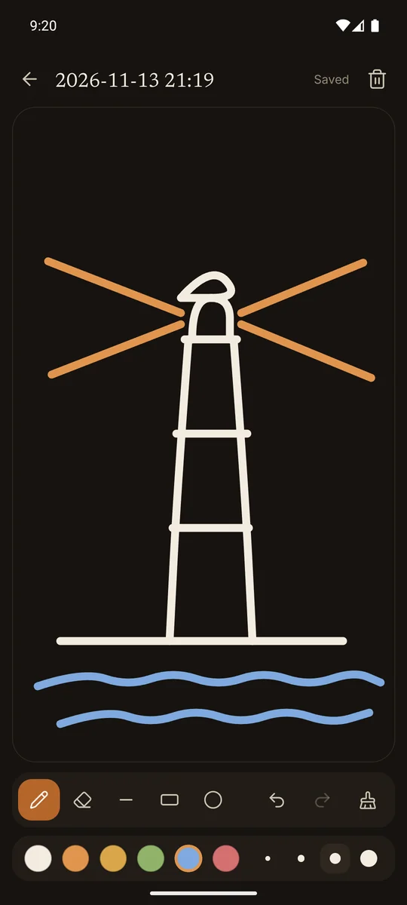

Write it down now.
Make sense of it later.
grail is a notebook for the ideas that turn up half-formed: on the bus, in the shower, in the middle of something else. You write them down as they come, dated and unsorted. Later, grail reads them back to you as one continuous text, and the good ones start to show.
Get it for Android Windows & Linux Free, no account.


One book, kept messy
The idea isn't new. Keep every idea in the same book, the moment it arrives, and don't tidy it up. Then read the book back, often. The ideas that keep returning are the ones worth something, and you only notice them when they sit next to each other.
Leonardo's notebooks put flying machines next to shopping lists. Darwin drew his first tree of life in a pocket notebook in 1837 and wrote “I think” above it. Scholars from Erasmus to Locke kept commonplace books of everything worth keeping, and Niklas Luhmann wrote more than seventy books out of about 90,000 linked notes. In The Last Crusade, Henry Jones Sr. carries a lifetime of clues in one battered grail diary. That's the whole method, and grail is that book.
What it does
- Notes without names
- Every note gets the date and time as its title. You never have to decide what to call a thought, or where it goes.
- Read
- Your notes, oldest first, as one continuous text. Move a fragment, take it out of the read, or delete it right there. Save the whole thing as Markdown or a PDF when you want a copy.
- Tags
- Write
#bookanywhere in a note and it's part of the book notebook, which has its own read. - Deleting is reversible
- A deleted note gets the
#deletedtag and stays out of sight until you search for it. - More than words
- Drawings, pictures and tables sit next to the text. Links get a small preview, but only when you ask.
- Your files
- Each note is a plain Markdown file in a folder you choose. Open them in any editor and back them up however you like. grail has no server and no account, so there's nothing to sign into and nothing to leak.

Download
| Android | Android 7 or newer | APK on GitHub |
|---|---|---|
| Windows | Windows 10 or 11 | Installer (.exe or .msi) |
| Linux | 64-bit | .deb or AppImage |
Version 1.1.1, 18 November 2026. Free and open source under the GPL. F-Droid and winget listings are on their way.
The Windows installer isn't code-signed yet, so Windows may say “Windows protected your PC” the first time. Click More info, then Run anyway.
Changes
- 1.1.1 The editor's button says Save. The desktop app no longer holds on to the previous version after an update.
- 1.1.0 A welcome and a short tour on first start. You choose the folder your notes live in. Deleted notes go to
#deleted. Keyboard shortcuts on the desktop. - 1.0.1 A rebuilt drawing canvas; the Android app is about a third smaller.
- 1.0.0 First release.
grail is made by MPKoutsoukos, in Greece, and it's free software: the source is on GitHub. It started from Perry Daniels' video on the grail method. The app and this page are set in Newsreader and Inter.
Bugs, questions and ideas are welcome at hello@grailnotebook.com or as a GitHub issue.